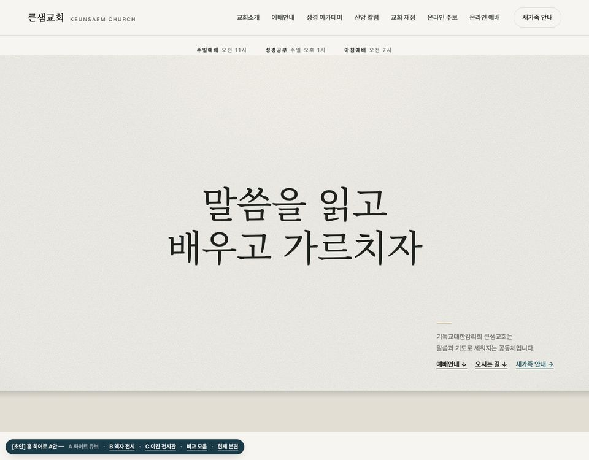
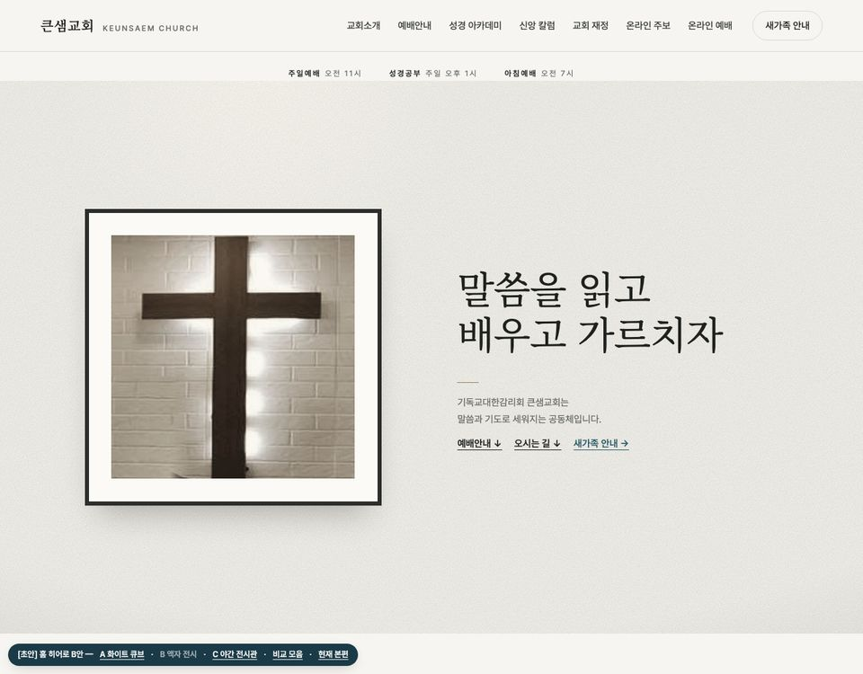
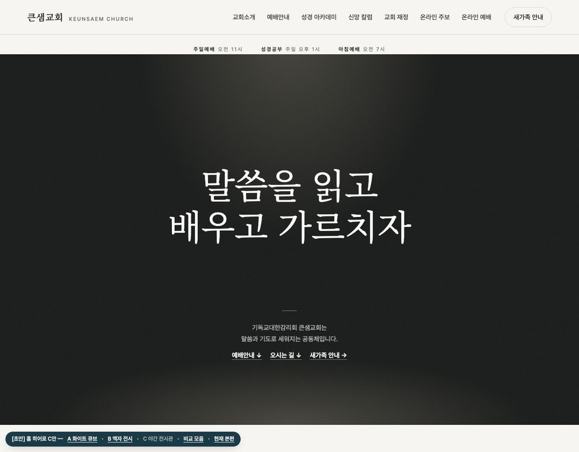
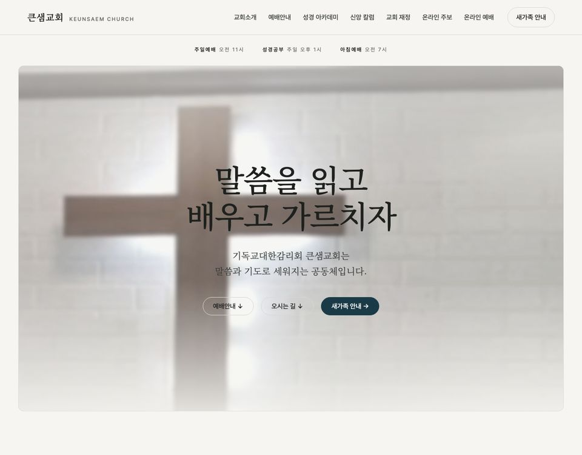

A · 화이트 큐브
미술관의 하얀 전시실 벽. 위에서 은은한 조명이 떨어지고, 아래에는 바닥선이 보입니다. 표어는 벽에 붙인 큰 글씨처럼, 안내 문장은 오른쪽 아래 작품 설명 카드처럼 놓았습니다.
가장 깔끔하고 조용한 안입니다.
A안 열어 보기 →요청하신 “더 고급스럽고 깔끔하게, 우리 홈페이지가 전시회(갤러리)에 온 것 같은 느낌”을 세 가지 방향으로 만들어 보았습니다. 사진을 누르면 실제 페이지가 열리고, 아래로 내리면 나머지 홈 화면도 그대로 이어집니다. 휴대폰으로 열어 보셔도 됩니다.

미술관의 하얀 전시실 벽. 위에서 은은한 조명이 떨어지고, 아래에는 바닥선이 보입니다. 표어는 벽에 붙인 큰 글씨처럼, 안내 문장은 오른쪽 아래 작품 설명 카드처럼 놓았습니다.
가장 깔끔하고 조용한 안입니다.
A안 열어 보기 →
우리 예배당 십자가를 액자에 넣어 전시 작품처럼 걸고, 그 옆에 표어를 전시 제목처럼 두었습니다.
“갤러리에 왔다”는 느낌이 가장 직접적인 안입니다. 원본 사진이 작아 확대하면 약간 부드럽게 보입니다.
B안 열어 보기 →
어두운 먹색 벽에 한 줄기 조명이 표어에만 떨어집니다. 저녁 전시관에 들어선 것처럼 차분하고 무게감이 있습니다.
가장 인상이 강한 안입니다. 첫 화면만 어둡고, 아래 내용은 지금처럼 밝은 종이색입니다.
C안 열어 보기 →
[초안] 2026-09-30 · 이 페이지와 세 안은 검색에 나오지 않도록 막아 두었습니다(noindex).